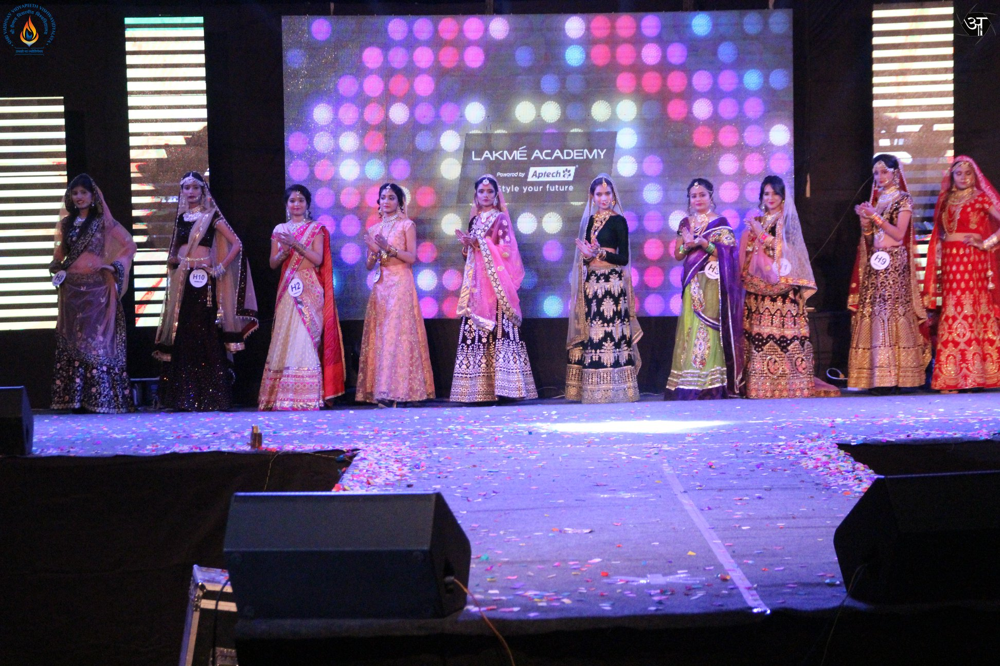
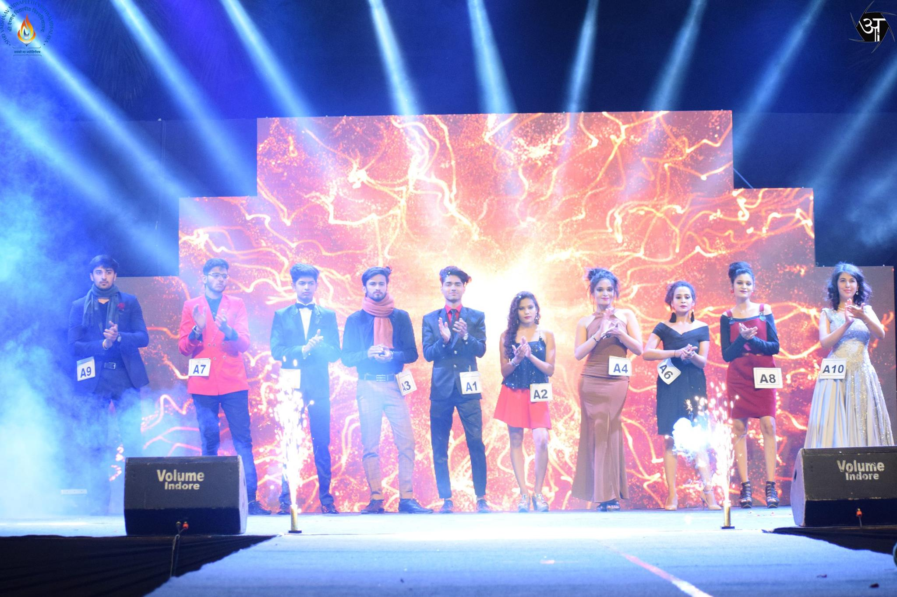
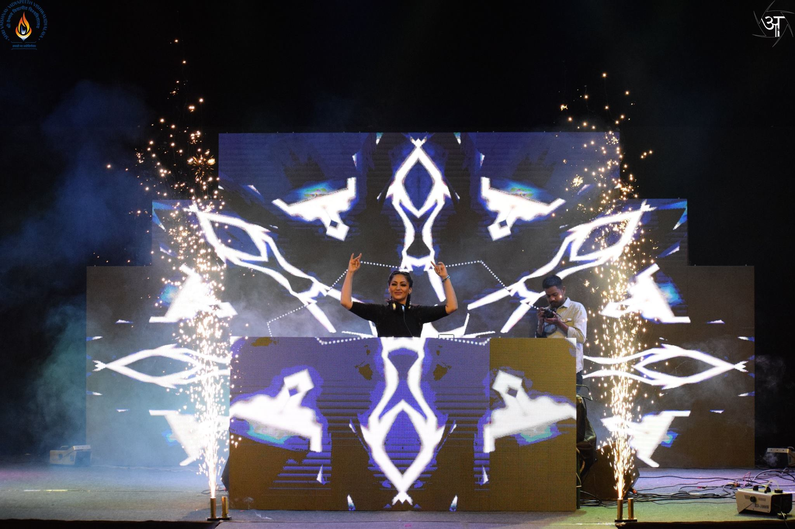
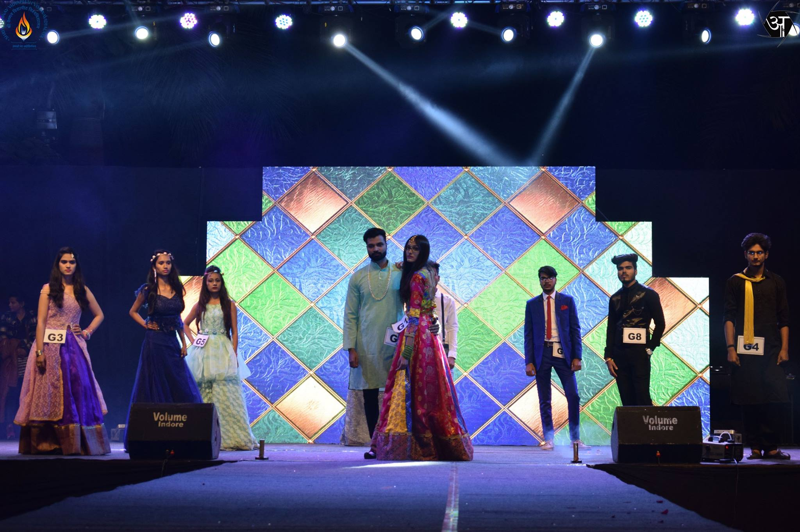

Vinirmah: Shri Vaishnav Institute of Textile Technology under the aegis of Shri Vaishnav Vidyapeeth Vishwavidyalaya. Presents a Fashion Show “Vinirmah” every year from 2018. The show provides open platform to the students from SVVV as well as other institutes and universities located in India. In which participant students show their talent on open platform in fashion show. The winners are recognized by reputed judge’s panel and given cash price with attractive titles and certificates. This event will provide platform for young talent to develop and get face fame in the fashion industry. Already three successful fashion shows in offline mode has been successfully organized by institute. In pandemic situation the trend has been continued on online platform. This year “Vinirmah-2023” is again in offline mode on open platform in SVVV campus on 28th January 2023. The participation is invited from students for Vinirmah-2023 till 05th January 2023.




